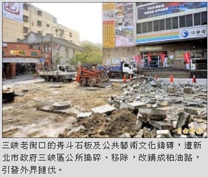

三峽老街挖除鐵磚 李梅樹紀念館擬提告
張安蕎｜自由時報／新北都會焦點｜2016年4月8日
古色古香的新北市三峽老街曾獲「全球傑出建築金獎」，屬於得獎作品一部分的青斗石板及公共藝術文化鑄磚，昨天（6日）遭新北市政府三峽區公所搗碎、移除，李梅樹紀念館今對此發出聲明，譴責市府決策粗暴，不排除提告，並宣布退出公部門主辦的老街百年慶活動。
在地方里長反映老街石板及鐵磚易打滑、安全堪慮之下，區公所昨天拆除老街口約30公尺長、造價百萬的路面，改鋪成一般瀝青柏油，引發在地居民及文史團體撻伐，臉書上更出現「對李畫伯的承諾 守護三峽老街行動」活動頁面，吸引上百位網友關注。
李梅樹紀念館表示，公部門的刨除行動，僅憑一紙「三峽區公所工務課」的現場公告，事前無任何溝通協調之舉，亦無任何公民參與討論的機會，作為鐵磚作品圖像無償提供者的李梅樹紀念館，更是完全未獲任何知會，顯示公部門決策過程之極度粗暴，及對於文化藝術的漠視與不尊重！
尤其今年正值三峽「街區改正」100週年，民間各界無不準備熱烈迎接歡慶之際，公部門竟主導以怪手剷除文化資產，無異是對地方文化的一大重擊。三峽老街經此破壞摧殘，當初復舊改造計畫完整性不再，官方再舉辦任何「百年慶」活動實已毫無意義可言！
針對區公所考慮將鐵磚改置於「長福橋」展示，李梅樹紀念館也表示反對，將收回授權，並不排除行使法律追訴權。聲明亦指出，「長福橋正是30多年前另一件公部門不顧民意、粗暴決策下的錯誤建設，當年李梅樹極力反對該址興建此橋，未料30年後公部門的粗暴依然故我，繼續重蹈覆轍，令人不勝唏噓！」
對此，三峽區長陳健民表示，尊重李梅樹紀念館的想法，有關李梅樹作品的鐵磚，會先暫由公所保留，並持續溝通協調，希望未來有相關活動仍能與紀念館結合，公所會檢討此次事件的內部程序與配套措施。